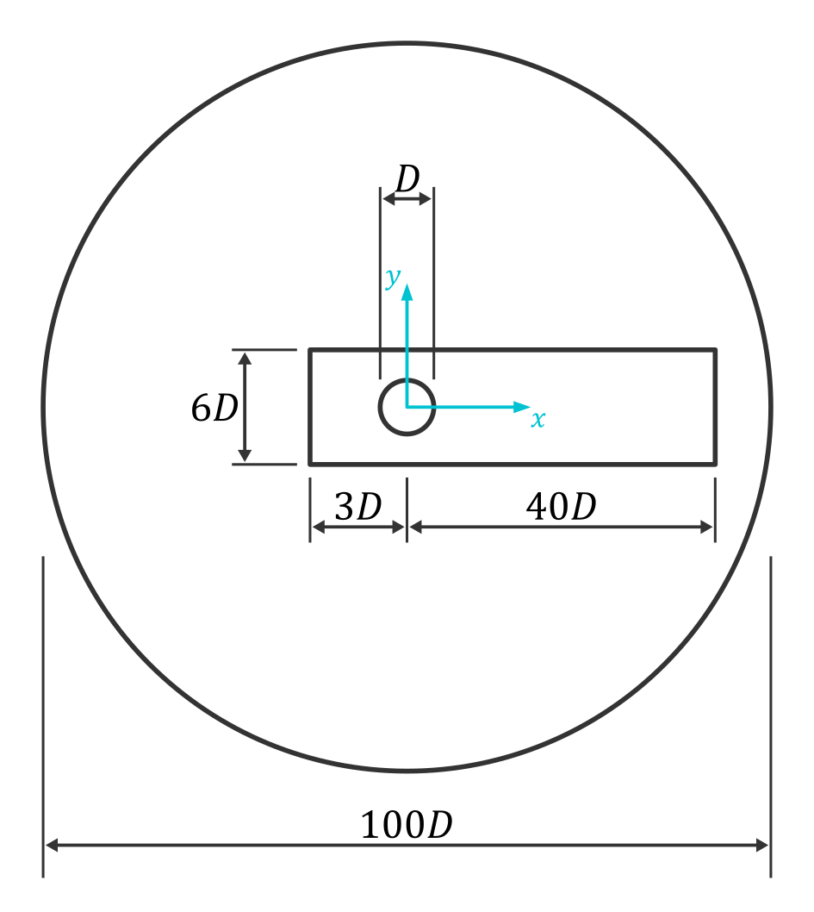

2D Vortex-Induced Vibrations
1. Introduction
Vortex-Induced Vibrations (VIV) are a fluid–structure interaction phenomenon that occurs when a fluid flow passes around a bluff body, such as a cylinder, generating alternating vortices in its wake (Kármán vortex street).
1.1 Why Does VIV Matter?
This periodic shedding of vortices produces oscillating forces perpendicular to the flow direction, which can induce vibrations in the structure. When the frequency of vortex shedding approaches the natural frequency of the structure, a resonance condition may occur, significantly amplifying the oscillation amplitude.
Understanding VIV is crucial in many engineering applications, particularly in offshore, civil and mechanical engineering.
1.2 VIV for Energy Harvesting
Although often considered a source of damage, VIV can also be exploited as a renewable energy source. Flow-induced oscillations can be converted into electrical power using devices such as piezoelectric or electromagnetic systems. This approach enables the development of self-powered sensors and small-scale energy solutions.
VIV therefore represents not only a challenge, but also an opportunity in modern engineering.
2. Physical Model
To investigate vortex-induced vibrations (VIV), the system is modeled as a simplified fluid–structure interaction problem, where a circular cylinder is elastically mounted and free to oscillate in the transverse direction (see figure 1).
The governing equation of motion is:
$$\ddot{y}+2\zeta\omega_n\dot{y}+\omega_n^2y=F_y/m_{eff}$$
where $y$ is the transverse displacement, $\omega_n$ is the natural frequency of the system, $\zeta$ is the damping ratio, $F_y$ is the fluid force in the transverse direction and $m_{eff}$ is the effective mass.

3. Setup
3.1 Input Data
Different inlet velocity values are considered in order to investigate the system response over a range of flow conditions relevant to vortex-induced vibrations. The corresponding Reynolds numbers are evaluated for each case according to the standard definition:
$$Re=\frac{\rho U D}{\mu}$$
where $\rho$ is the fluid density, $U$ is the inlet velocity, $D$ is cylinder diameter and $\mu$ is the fluid viscosity.
| $U [m/s]$ | $Re$ |
|---|---|
| 10.1 | $3.46 \cdot 10^6$ |
| 16.4 | $5.61 \cdot 10^6$ |
| 22.6 | $7.75 \cdot 10^6$ |
| 28.9 | $9.90 \cdot 10^6$ |
| 35.2 | $1.20 \cdot 10^7$ |
3.2 Geometry and Computational Domain
The problem is modeled as a two-dimensional flow around a circular cylinder with diameter $D=5 \, m$.
The computational domain is designed to minimize boundary effects while keeping the computational cost reasonable. The inlet and lateral boundaries are placed sufficiently far from the cylinder to ensure that the flow development and vortex shedding are not artificially constrained by the domain size.

3.3 Mesh Strategy
A non-uniform mesh is used to resolve the boundary layer around the cylinder and the wake region where vortex shedding develops. An inflation layer is applied near the cylinder wall to properly capture near-wall gradients and the boundary layer (see figure 3). A local refinement zone (body of influence) is introduced around the cylinder (see figure 4) to resolve velocity gradients and flow separation while limiting numerical diffusion in the wake.


3.4 Boundary Layer Resolution
Proper resolution of the boundary layer is required to accurately capture near-wall effects, particularly for drag prediction and flow separation at high Reynolds numbers. The boundary layer thickness is estimated using the empirical relation for turbulent flow over a flat plate:
$$\delta \approx \frac{0.37x}{\sqrt{Re}}, \quad x \approx 0.5 \pi D$$
The height of the first near-wall cell is determined based on a target wall distance $y^+ \approx 1$:
$$y=\frac{y^+\nu}{u_\tau}$$
where the friction velocity is obtained from the skin friction coefficient:
$$C_f=\frac{0.079}{\sqrt[4]{x}}, \quad u_{\tau}=U_{\infty}\sqrt{\frac{C_f}{2}}$$
The inflation layer is then defined such that its total thickness matches the estimated boundary layer thickness $\delta$. Assuming a geometric growth rate $r$, the number of layers $N$ is computed from:
$$\delta=h\sum_{i=1}^{N}r^i=h\frac{r^N-1}{r-1}$$
3.5 Solver Setup
The flow is modeled as incompressible, viscous air and solved using a transient approach. Simulations are performed using the SST $k-\omega$ turbulence model. The time step is chosen based on the oscillation period:
$$\Delta t < \frac{T}{20}$$
3.6 Dynamic Mesh
A dynamic mesh approach is used to account for the transverse motion of the cylinder. The system is modeled as a single degree-of-freedom oscillator with:
- mass: $m=28.5 \, kg$
- stiffness: $k=24.8 \, N/m$
4. Results
4.1 Dimensionless wall distance
The time evolution of the wall unit $y^+$ is shown in figure 5. The value remains nearly constant and close to 1 throughout the simulation.

4.2 Frequency-domain analysis
The power spectral density (PSD) of the aerodynamic coefficients and transverse displacement is shown in figure 6.

To quantify the response, the mean values $\overline{X}$ and oscillation amplitudes $\lvert X \lvert$ are reported in the table below.
| $Re$ | $\overline{C_l} \pm \lvert C_l \lvert$ | $\overline{C_d} \pm \lvert C_d \lvert$ | $\overline{y} \pm \lvert y \lvert$ |
|---|---|---|---|
| $3.46 \cdot 10^6$ | $0.009 \pm 0.351$ | $0.560 \pm 0.032$ | $-1.710 \, m \pm 0.290 \, m$ |
| $5.61 \cdot 10^6$ | $0.003 \pm 0.022$ | $0.373 \pm 0.000$ | $-1.713 \, m \pm 0.105 \, m$ |
| $7.75 \cdot 10^6$ | $0.001 \pm 0.024$ | $0.335 \pm 0.000$ | $-1.738 \, m \pm 0.179 \, m$ |
| $9.90 \cdot 10^6$ | $0.003 \pm 0.025$ | $0.349 \pm 0.000$ | $-1.472 \, m \pm 0.258 \, m$ |
| $1.20 \cdot 10^7$ | $0.000 \pm 0.247$ | $0.382 \pm 0.036$ | $-1.824 \, m \pm 0.524 \, m$ |
figure 7 summarizes the variation of key quantities with Reynolds number.
5. Conclusion
5.1 Limitations of the present model
The main limitations of the present approach are related to physical modeling assumptions:
- The two-dimensional formulation neglects inherently three-dimensional effects, such as spanwise flow structures, which are known to influence vortex shedding and VIV response.
- The structural model is limited to a single transverse degree of freedom, ignoring modal coupling, nonlinear effects, and additional directions of motion.
- Finally, the use of the SST $k-\omega$ model may not fully capture highly unsteady separated flows at high Reynolds numbers, introducing uncertainty in the prediction of vortex dynamics.
5.2 Future improvements
Future work should focus on extending the present framework toward more realistic and predictive configurations:
- A natural progression is the adoption of a fully coupled fluid–structure interaction (FSI) model, enabling the analysis of more complex dynamic behaviors and potential nonlinear effects.
- Further developments may include parametric studies over a wider range of Reynolds numbers and structural properties to better characterize the VIV response.
- Finally, validation against experimental data is required to assess the reliability of the numerical predictions and support model calibration.